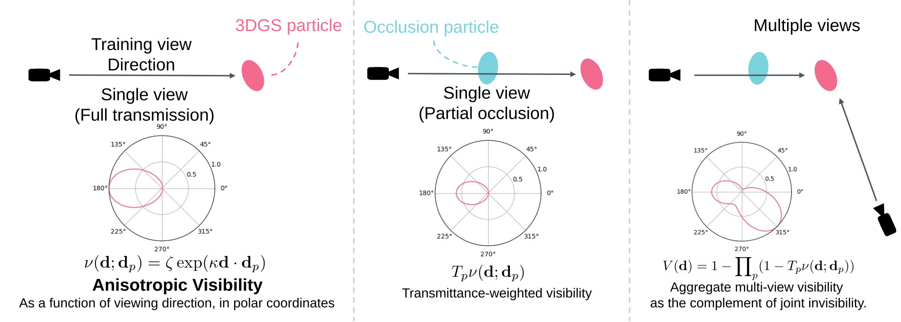
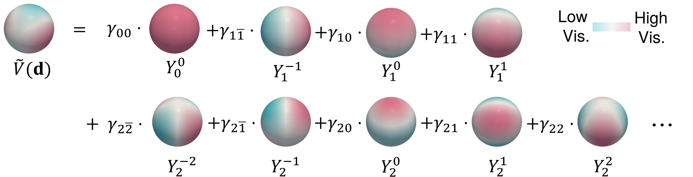
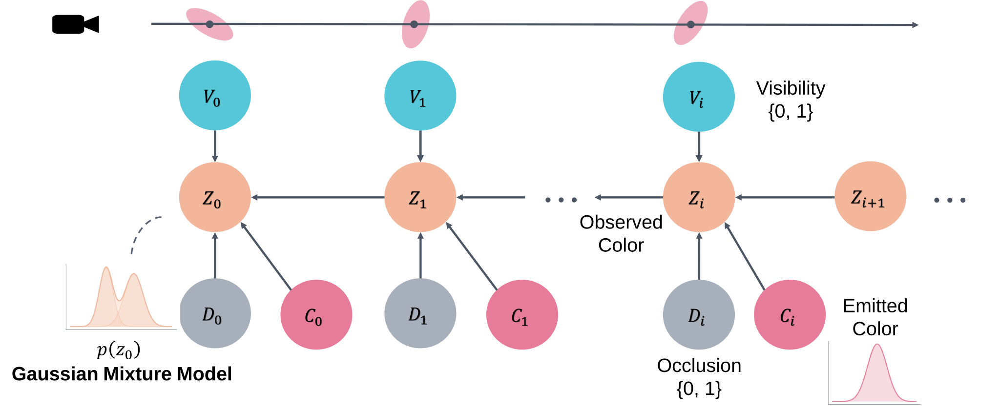
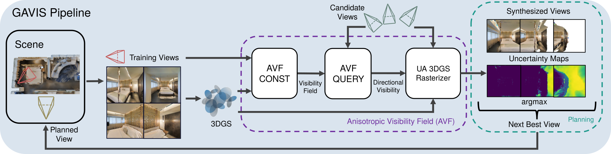
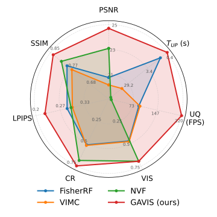

GAVIS is a principled framework for quantifying uncertainty in 3D Gaussian Splatting, enabling accurate and efficient active perception.

✦ Insights
✦ Abstract
We present Gaussian Splatting Anisotropic Visibility Field (GAVIS), a novel framework for uncertainty quantification and active mapping in 3DGS. Our key insight is that regions unseen from the training views yield unreliable predictions from the 3DGS. To address this, we introduce a principled and efficient method for quantifying the visibility field in 3DGS, defined as the anisotropic visibility of each particle with respect to the training views, and represented using spherical harmonics. The resulting visibility field is integrated into a Bayesian Network–based uncertainty-aware 3DGS rasterization module, enabling real-time (200 FPS) uncertainty quantification for synthesized views. Active mapping is further performed within a maximum information gain framework building on this formulation. Extensive experiments across diverse environments demonstrate that GAVIS consistently and significantly outperforms prior approaches in both accuracy and efficiency. Moreover, beyond standalone use, our method can be applied post-hoc to improve the performance of existing approaches.
✦ Contributions
✦ Method
Formulation
Anisotropic Visibility Fields model direction-dependent visibility: whether a region is supported by the training views along a query direction — or equivalently, how much we can trust the 3DGS prediction as a function of viewing direction.

Spherical Harmonics Representation
The Anisotropic Visibility Field is represented with spherical harmonics, enabling accurate and efficient construction and querying.

Uncertainty Quantification via a Bayesian Network
We extend the visibility-modulated, uncertainty-aware volume-rendering formulation from our prior work NVF to 3DGS rasterization, where the synthesized-observation posterior is represented as a Gaussian Mixture Model (GMM).

GAVIS Pipeline
From posed training views we reconstruct a 3DGS scene, construct the Anisotropic Visibility Field, and query it through an uncertainty-aware rasterizer to obtain per-view uncertainty maps that drive next-best-view selection.

✦ Results
Active Mapping Quantitative Results

Metrics span view synthesis quality (PSNR, SSIM, LPIPS), mesh reconstruction quality (CR: Completion Ratio), and runtime (— TUP: visibility-field construction time; UQ: uncertainty quantification speed in FPS). All axes are normalized so that farther from the center is better.
Runtime
GAVIS constructs the visibility field within one second and quantifies uncertainty at 200 FPS — 500× faster visibility field construction and 30× faster uncertainty quantification than our prior work NVF.
BibTeX
@inproceedings{xue2026gavis,
title = {Uncertainty-driven 3D Gaussian Splatting Active Mapping
via Anisotropic Visibility Field},
author = {Xue, Shangjie and Dill, Jesse and Ahuja, Dhruv
and Dellaert, Frank and Tsiotras, Panagiotis and Xu, Danfei},
booktitle = {IEEE/CVF Conference on Computer Vision and
Pattern Recognition (CVPR)},
year = {2026}
}
@inproceedings{xue2024nvf,
title = {Neural Visibility Field for Uncertainty-Driven
Active Mapping},
author = {Xue, Shangjie and Dill, Jesse and Mathur, Pranay
and Dellaert, Frank and Tsiotras, Panagiotis and Xu, Danfei},
booktitle = {IEEE/CVF Conference on Computer Vision and
Pattern Recognition (CVPR)},
pages = {18122--18132},
year = {2024}
}